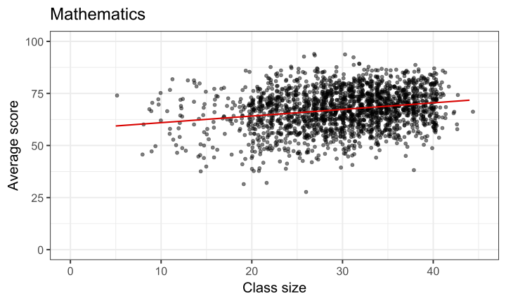
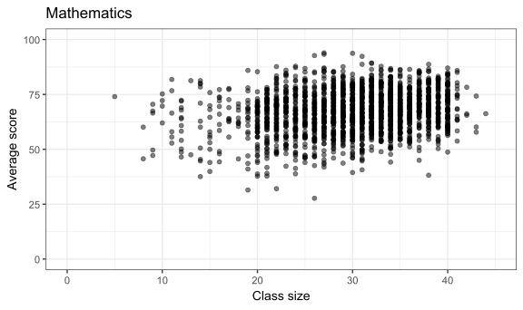
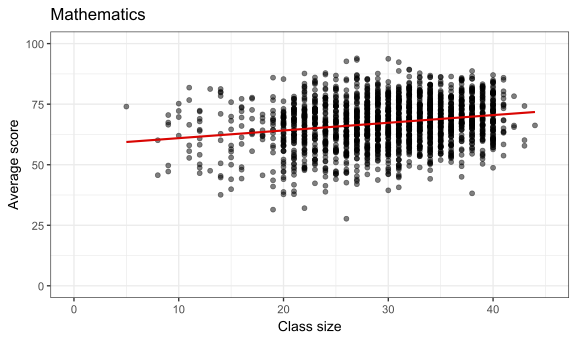
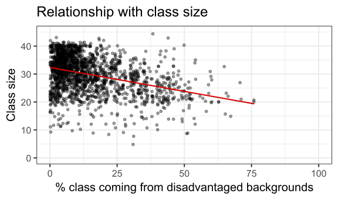
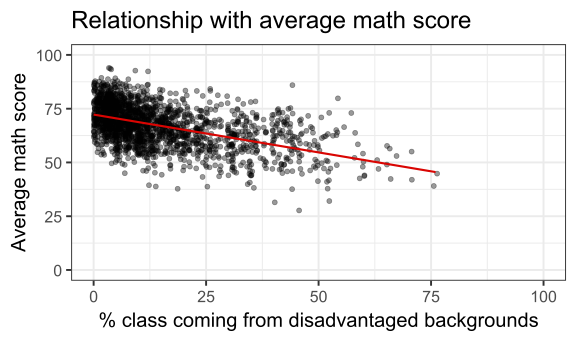

FMB819: R을 이용한 데이터분석
Multiple Regression Model
Today’s Agenda
- 다중 독립 변수 (Multiple independent variables)
- 연속 변수와 더미 변수 해석 (Interpretation for continuous and dummy regressors)
- 더미 변수 함정 (Dummy Variable Trap)
- 누락 변수 편향 (Omitted Variable Bias)
- 조정된 \(R^2\) (Adjusted \(R^2\))
- 실증 분석:
- 학급 규모 (Class Size)와 학생 성취 (Student Performance)
학급 규모와 학생 성취
Angrist & Lavy (1999)의 연구 분석
- 이스라엘 학생들의 성취도에 대한 학급 규모의 영향을 분석
- 단순 선형 회귀를 사용한 경우,
→ 학급 규모가 커질수록 수학 및 읽기 점수가 증가하는 연관성이 발견됨
학급 규모와 학생 성취: 원자료 관계
학급 규모와 학생 성취: 단순 선형 회귀 포함
학급 규모와 학생 성취: 단순 선형 회귀 포함
Call:
lm(formula = avgmath ~ classize, data = grades)
Coefficients:
(Intercept) classize
57.7939 0.3175 학급 규모와 학생 성취
Angrist & Lavy (1999)의 연구로 돌아가서, 이스라엘에서의 학급 규모가 학생 성취에 미치는 영향을 분석해보자.
단순 선형 회귀 (Simple Linear Regression) 결과에 따르면, 학급 규모가 학생들의 수학 및 읽기 점수와 양의 상관관계를 가짐 (positively associated).
이는 직관적으로 예상되지 않는 결과이며, STAR 무작위 실험 결과와도 대조적임.
그렇다면, 학급 규모와 학생 성취 모두와 관련된 다른 변수가 있을까?
특히, 지역(location) 효과가 존재할 가능성이 있음.
- 대규모 학급은 부유한 대도시에서 더 흔할 수 있음.
- 소규모 학급은 경제적으로 어려운 농촌 지역에서 더 많을 수 있음.
- 대규모 학급은 부유한 대도시에서 더 흔할 수 있음.
이 가설을 검증해보자.
학급 규모와 학생 성취: 교란 변수(Confounders)
학급 규모와 불리한 배경을 가진 학생 비율 간의 관계

➡ 평균적으로, 불리한 배경을 가진 학생 비율이 높은 학급일수록 학급 규모가 작음. :
평균 수학 점수와 불리한 배경을 가진 학생 비율 간의 관계

➡ 평균적으로, 불리한 배경을 가진 학생 비율이 높을수록 평균 수학 점수가 낮아짐.
학급 규모와 학생 성취: 다중 회귀 분석 (Multiple regression)
우리는 학급 규모가 평균 수학 점수에 미치는 효과를 알고 싶음.
하지만, 불리한 배경을 가진 학생 비율과 학급 규모 및 평균 수학 점수 간의 음의 관계를 고려해야 함.
이를 위해
classize와disadvantaged변수를 회귀 분석의 독립 변수(regressors)로 포함해야 함.이렇게 하면 학급 규모가 평균 수학 점수에 미치는 효과를, 불리한 배경 변수의 영향을 제거한(purged) 형태로 추정 가능.
추정하려는 회귀 모델
\[ \textrm{average math score}_i = b_0 + b_1 \textrm{class size}_i + b_2 \textrm{% disadvantaged}_i + e_i \]
- 이는 다중 회귀 분석(Multiple Regression)!
- 이 모델을 곧 추정해볼 예정.
- 먼저, 지금까지 배운 내용을 정리해 보자.
다중 회귀 분석의 목적
- 단순 선형 회귀 모델(Simple Linear Model) 은 다음과 같이 표현됨:
\[ y_i = b_0 + b_1 x_i + e_i \]
X가Y를 인과적으로(causally) 결정한다고 주장하려면,X의 값을 변경했을 때(X를 조작), 다른 모든 요인은 동일하게 유지(ceteris paribus)되면서Y가 변화해야 함.
⚠️ 만약 \(y_i\)에 영향을 주는 다른 모든 요인이 \(x_i\)와 상관관계가 있다면,
→ \(b_1\)은 인과적 효과(Causal Effect)로 해석될 수 없음.이를 해결하기 위해, 모델을 확장하고(y_i를 동시에 설명하는 다른 요인을 포함)
→ \(y_i\)와 \(x_i\) 모두와 관련된 변수들을 고려해야 함.
다중 회귀 분석 모델
확장된 회귀 모델은 다음과 같이 표현됨:
\[ y_i = b_0 + b_1 x_{1,i} + b_2 x_{2,i} + b_3 x_{3,i} + \dots + b_k x_{k,i} + e_i \]
- 여기서 \(x_1\), \(x_2\), …, \(x_k\) 는 \(k\)개의 독립 변수(regressors)
- \(b_1\), \(b_2\), …, \(b_k\) 는 각 독립 변수에 대응하는 회귀 계수(coefficients)
추정(Estimation)
- \((b_0, b_1, b_2, ..., b_k)\) 값은 최소자승법(OLS, Ordinary Least Squares) 을 사용하여 추정됨.
- 즉, 다음을 최소화하는 값을 찾음:
\[ \begin{align} \sum_{i}{e_i^2} &= \sum_{i}{(y_i - \hat{y_i})^2} \\ &= \sum_{i}{[y_i - (b_0 + b_1 x_{1,i} + b_2 x_{2,i} + b_3 x_{3,i} + \dots + b_k x_{k,i})]^2} \end{align} \]
- OLS는 잔차 제곱합(Sum of Squared Residuals, SSR) 을 최소화하는 방식으로 최적의 계수를 찾음.
다중 회귀 분석: 해석
가정 : 종속 변수 \((y_i)\) 와 독립 변수 \((x_k)\) 모두 연속형 변수(numeric variables) 라고 가정.
절편 (\(b_0\)): \(x_1, x_2, x_3, ...\) 모든 독립 변수가 0일 때, 예측된 \(y\) 값 \(\widehat{y}\)
기울기 (\(b_k\)): \(x_k\)가 1 단위 증가할 때, \(y\) 값이 평균적으로 어떻게 변하는지 예측… 단, 다른 모든 독립 변수들은 일정하게 유지!
다른 모든 변수들을 일정하게 유지한다는 점이 단순 선형 회귀(SLM)와 다른 점.
즉, \(x_k\)가 \(y\)에 미치는 개별적인 효과를 고립시켜 분석하는 것.
인과 추론(Causal Inference)과의 연결
- 다중 회귀 분석에서는 모델에 포함된 변수들만 일정하게 유지됨.
- 모델에 포함되지 않은 변수들은 여전히 변할 수 있어, 추정값에 편향을 일으킬 가능성이 있음.
- 다중 회귀 분석에서는 모델에 포함된 변수들만 일정하게 유지됨.
R을 사용한 다중 회귀 분석
- 단순 선형 회귀와 매우 유사함.
lm()함수를 사용하여 다중 회귀 분석 수행 가능.
- 학급 규모와 학생 성취: 다중 회귀 분석: \(\textrm{average math score}_i = b_0 + b_1 \textrm{class size}_i + b_2 \textrm{% disadvantaged}_i + e_i\)
Call:
lm(formula = avgmath ~ classize + disadvantaged, data = grades)
Coefficients:
(Intercept) classize disadvantaged
69.94438 0.07168 -0.33958 학급 규모와 학생 성취: 다중 회귀 분석
Call:
lm(formula = avgmath ~ classize + disadvantaged, data = grades)
Coefficients:
(Intercept) classize disadvantaged
69.94438 0.07168 -0.33958 Questions
- 각 회귀 계수(coefficients)는 어떻게 해석할 수 있는가?
- 단순 선형 회귀(SLM)와 비교했을 때 classize 계수의 변화는 어떻게 설명할 수 있는가?
학급 규모와 학생 성취: 다중 회귀 분석
Call:
lm(formula = avgmath ~ classize + disadvantaged, data = grades)
Coefficients:
(Intercept) classize disadvantaged
69.94438 0.07168 -0.33958 Answers
- 각 회귀 계수의 해석
\(b_0 = 69.94\): 학급 규모 (classize) 와 불리한 배경을 가진 학생 비율 (disadvantaged) 이 모두 0일 때, → 평균 수학 점수(average math score)의 예측값은 69.94
\(b_1 = 0.07\): 불리한 배경을 가진 학생 비율을 일정하게 유지할 경우, 학급 규모(class size)가 1명 증가하면, → 평균 수학 점수가 평균적으로 0.07점 증가하는 것과 연관됨(associated).
\(b_2 = -0.34\): 학급 규모(class size)를 일정하게 유지할 경우, 불리한 배경을 가진 학생 비율이 1% 증가하면, → 평균 수학 점수가 평균적으로 0.34점 감소하는 것과 연관됨(associated).
학급 규모와 학생 성취: 다중 회귀 분석
Call:
lm(formula = avgmath ~ classize + disadvantaged, data = grades)
Coefficients:
(Intercept) classize disadvantaged
69.94438 0.07168 -0.33958 Answers
- 단순 선형 회귀(SLM)와 비교했을 때 classize 계수의 변화는 어떻게 설명할 수 있는가?
- \(b_1\) 값이 감소: disadvantaged 변수를 추가하자 학급 규모(class size)의 계수(\(b_1\))가 감소함. 이는 예상된 결과로, → 큰 학급일수록 불리한 배경을 가진 학생 비율이 작아지는 경향이 있었기 때문. 즉, 단순 선형 회귀에서는 학급 규모가 학생 성취에 미치는 “순수한 효과”뿐만 아니라, 불리한 배경을 가진 학생 비율이 적은 영향도 포함하고 있었음.
Task 1
10:00 - 읽기(Reading) 점수를 종속 변수(Dependent Variable) 로 설정하여 회귀 분석을 수행
haven패키지의read_dta()함수를 사용하여 데이터를 불러오기. 데이터를grades라는 객체에 저장
- avgverb (읽기 점수)를 종속 변수로, classize와 disadvantaged를 독립 변수로 사용하여 회귀분석. 결과를 reg 객체에 저장. 각 계수(coefficient)의 의미는 무엇인가? 단순 선형 회귀(Simple Linear Regression)와 비교했을 때 계수는 어떻게 달라졌는가? 수학 점수 회귀 분석(Math Score Regression)과 비교했을 때 계수의 차이점은 무엇인가?
(Optional) 데이터셋에서 추가 가능한 변수를 확인하고 회귀 분석을 확장. 모든 변수를 포함한 회귀 분석을 수행하고 reg_full 객체에 저장.
- 추가된 변수들의 계수(sign & magnitude)를 해석하라.
- 추가된 변수가 포함됨으로 인해 classize 및 disadvantaged의 계수는 어떻게 변했는가?
- 전체 모델의 설명력이 증가했는가? (R^2 값 확인)
연속형 변수와 더미 변수의 회귀 계수 해석
연속형(numeric, continuous) 변수의 계수 해석 방법은 이미 알고 있음.
그렇다면, 독립 변수 중 하나가 더미 변수(dummy variable) 라면?
예제 (Example): 아래 회귀 모델에서 각 계수의 의미는?
\[ \text{average math score}_i = b_0 + b_1\text{class size}_i + b_2\text{religious}_i +e_i \]
religious: 1이면 해당 학교가 종교 학교, 0이면 해당 학교가 일반 학교
Call:
lm(formula = avgmath ~ classize + religious, data = grades)
Coefficients:
(Intercept) classize religious
61.3092 0.2311 -3.7800 연속형 변수와 더미 변수를 포함한 회귀 분석 (Formal Interpretation)
\[ \text{average math score}_i = \color{#d96502}{b_0} + \color{#d90502}{b_1}\text{class size}_i + \color{#027D83}{b_2}\text{religious}_i +e_i \]
- 다음이 성립
\[\begin{align} \mathbb{E}(\text{average math score} | \text{religious} = 0 \text{ & } \text{class size} = 0) &= \color{#d96502}{b_0} + \color{#d90502}{b_1} \times 0 + \color{#027D83}{b_2} \times 0 \\ &= \color{#d96502}{b_0} \end{align}\]
절편 (Intercept, \(b_0\)): religious = 0 (일반 학교)이고, class size = 0인 경우의 예측된 평균 수학 점수
- \(\color{#d96502}{b_0}\) 는 학급 규모가 0이고, 학교가 일반 학교일 때의 평균 수학 점수를 의미.
연속형 변수와 더미 변수를 포함한 회귀 분석 (Formal Interpretation)
\[ \text{average math score}_i = \color{#d96502}{b_0} + \color{#d90502}{b_1}\text{class size}_i + \color{#027D83}{b_2}\text{religious}_i +e_i \]
- 다음이 성립
\[\begin{equation} \mathbb{E}(\text{average math score} | \text{religious} \in \{0,1\} \text{ & } \color{#d90502}{\text{class size} = n_1}) = \color{#d96502}{b_0} + \color{#d90502}{b_1} \times n_1 + \color{#027D83}{b_2} \times \text{religious} \end{equation}\] \[\begin{multline} \mathbb{E}(\text{average math score} | \text{religious} \in \{0,1\} \text{ & } \color{#d90502}{\text{class size} = n_1+1}) = \\ \color{#d96502}{b_0} + \color{#d90502}{b_1} \times (n_1+1) + \color{#027D83}{b_2} \times \text{religious} \end{multline}\] \[\begin{multline} \mathbb{E}(\text{average math score} | \text{religious} \in \{0,1\} \text{ & } \color{#d90502}{\text{class size} = n_1+1}) - \\ \mathbb{E}(\text{average math score} | \text{religious} \in \{0,1\} \text{ & } \color{#d90502}{\text{class size} = n_1}) \\ = \color{#d96502}{b_0} + \color{#d90502}{b_1} \times (n_1+1) + \color{#027D83}{b_2} \times \text{religious} - (\color{#d96502}{b_0} + \color{#d90502}{b_1} \times n_1 + \color{#027D83}{b_2} \times \text{religious}) = \color{#d90502}{b_1} \end{multline}\]
- \(\color{#d90502}{b_1}\)은 학급 규모(class size)가 1명 증가할 때, 평균 수학 점수가 평균적으로 변화하는 정도를 나타냄. 단, 학교의 종교적 특성(
religious변수)은 일정하게 유지된 상태에서
연속형 변수와 더미 변수를 포함한 회귀 분석 (Formal Interpretation)
\[ \text{average math score}_i = \color{#d96502}{b_0} + \color{#d90502}{b_1}\text{class size}_i + \color{#027D83}{b_2}\text{religious}_i +e_i \]
- 다음이 성립
\[\begin{align} \mathbb{E}(\text{average math score} | \color{#027D83}{\text{religious} = 1} \text{ & } \text{class size} \in \mathbb{N}) &= \color{#d96502}{b_0} + \color{#d90502}{b_1} \times \text{class size} + \color{#027D83}{b_2} \times 1 \\ &= \color{#d96502}{b_0} + \color{#d90502}{b_1} \times \text{class size} + \color{#027D83}{b_2} \end{align}\] \[\begin{align} \mathbb{E}(\text{average math score} | \color{#027D83}{\text{religious} = 0} \text{ & } \text{class size} \in \mathbb{N}) &= \color{#d96502}{b_0} + \color{#d90502}{b_1} \times \text{class size} + \color{#027D83}{b_2} \times 0 \\ &= \color{#d96502}{b_0} + \color{#d90502}{b_1} \times \text{class size} \end{align}\] \[\begin{multline} \mathbb{E}(\text{average math score} | \color{#027D83}{\text{religious} = 1} \text{ & } \text{class size} \in \mathbb{N}) - \\ \mathbb{E}(\text{average math score} | \color{#027D83}{\text{religious} =0} \text{ & } \text{class size} \in \mathbb{N}) \\ = \color{#d96502}{b_0} + \color{#d90502}{b_1} \times \text{class size} + \color{#027D83}{b_2}- (\color{#d96502}{b_0} + \color{#d90502}{b_1} \times \text{class size}) = \color{#027D83}{b_2} \end{multline}\]
\(\rightarrow\) \(\color{#027D83}{b_2}\) corresponds to the expected difference in average math score between religious and non-religious schools, keeping class size constant.
연속형 변수와 더미 변수를 포함한 회귀 분석: 요약
\[ \text{average math score}_i = \color{#d96502}{b_0} + \color{#d90502}{b_1}\text{class size}_i + \color{#027D83}{b_2}\text{religious}_i +e_i \]
\[\begin{equation} \color{#d96502}{b_0} = \mathbb{E}(\text{average math score} | \text{religious} = 0 \text{ & } \text{class size} = 0) \end{equation}\] \[\begin{multline} \color{#d90502}{b_1} = \mathbb{E}(\text{average math score} | \text{religious} \in \{0,1\} \text{ & } \color{#d90502}{\text{class size} = n_1+1}) - \\ \mathbb{E}(\text{average math score} | \text{religious} \in \{0,1\} \text{ & } \color{#d90502}{\text{class size} = n_1}) \end{multline}\] \[\begin{multline} \color{#027D83}{b_2} = \mathbb{E}(\text{average math score} | \color{#027D83}{\text{religious} = 1} \text{ & } \text{class size} \in \mathbb{N}) - \\ \mathbb{E}(\text{average math score} | \color{#027D83}{\text{religious} =0} \text{ & } \text{class size} \in \mathbb{N}) \end{multline}\] \[\begin{equation} \color{#d96502}{b_0} + \color{#027D83}{b_2} = \mathbb{E}(\text{average math score} | \text{religious} = 1 \text{ & } \text{class size} = 0) \end{equation}\]
연속형 변수와 더미 변수를 포함한 회귀 분석: 시각화
\[ \text{average math score}_i = \color{#d96502}{b_0} + \color{#d90502}{b_1}\text{class size}_i + \color{#027D83}{b_2}\text{religious}_i +e_i \]
연속형 변수와 더미 변수를 포함한 회귀 분석: 시각화
\[ \text{average math score}_i = \color{#d96502}{b_0} + \color{#d90502}{b_1}\text{class size}_i + \color{#027D83}{b_2}\text{religious}_i +e_i \]
연속형 변수와 더미 변수를 포함한 회귀 분석: 시각화
\[ \text{average math score}_i = \color{#d96502}{b_0} + \color{#d90502}{b_1}\text{class size}_i + \color{#027D83}{b_2}\text{religious}_i +e_i \]
연속형 변수와 더미 변수를 포함한 회귀 분석: 시각화
\[ \text{average math score}_i = \color{#d96502}{b_0} + \color{#d90502}{b_1}\text{class size}_i + \color{#027D83}{b_2}\text{religious}_i +e_i \]
연속형 변수와 더미 변수를 포함한 회귀 분석: 시각화
\[ \text{average math score}_i = \color{#d96502}{b_0} + \color{#d90502}{b_1}\text{class size}_i + \color{#027D83}{b_2}\text{religious}_i +e_i \]

완전 다중공선성(Perfect Collinearity)
- 추가하는 변수는 반드시 새로운 정보를 제공해야 함.
회귀 모형에 추가하는 변수들은 완전히 선형결합(linear combination)이 될 수 없음.
\[ x_2 \neq ax_1 + b \]
즉, 하나의 독립 변수를 다른 독립 변수들의 조합으로 완전히 표현할 수 있으면 안 됨.
완벽하게 선형 결합된 경우 → 회귀 분석 수행 불가능
높은 상관관계를 가지는 경우: 각 독립 변수의 개별적 효과(계수)를 정확히 분리하기 어려움 → 추정된 계수의 신뢰도가 낮아질 수 있음
관측치 수(Observations) > 독립 변수 개수(Independent Variables): 즉, 너무 많은 변수를 추가하면 과적합(overfitting) 문제가 발생할 수 있음. → ✅ 반드시 충족해야 하는 조건!
완전 다중공선성과 더미 변수 함정 (Dummy Variable Trap)
범주형 변수(categorical variables)란, 특정 개수의 “레벨(levels)”을 가지는 변수 (예: 성별, 계절, 인종, 교육 수준 등)
🏫
religious변수 예제:religious변수를 포함한 회귀 분석 수행
Call:
lm(formula = avgmath ~ classize + religious, data = grades)
Coefficients:
(Intercept) classize religious
61.3092 0.2311 -3.7800 ⚠ 더미 변수 함정 (Dummy Variable Trap) 만약 religious 변수를 두 개의 더미 변수(is_religious, is_notreligious)로 변환하여 사용한다면?
grades <- grades %>%
mutate(is_religious = (religious == 1),
is_notreligious = (religious == 0))
lm(avgmath ~ classize + is_religious + is_notreligious, grades)
Call:
lm(formula = avgmath ~ classize + is_religious + is_notreligious,
data = grades)
Coefficients:
(Intercept) classize is_religiousTRUE
61.3092 0.2311 -3.7800
is_notreligiousTRUE
NA ❓ 왜 하나의 계수만 추정되는가? 완전 다중공선성 발생 → is_religious와 is_notreligious는 항상 1의 합을 가짐. 즉, 한 변수를 다른 변수로 완전히 설명 가능
완전 다중공선성과 더미 변수 함정 (Dummy Variable Trap)
R은 완전 다중공선성(perfect collinearity)을 자동으로 감지하고, 한 변수를 자동으로 제거(drop) 함.
⚠ 기준(reference) 그룹과 계수 해석
- ✅ *제거된 변수(omitted category)는 기준 그룹(reference group)이 됨!**
- 💡 모든 계수는 이 기준 그룹 대비 변화량을 의미함.
\[\begin{multline} \color{#027D83}{b_2} = \mathbb{E}(\text{average math score} | \color{#027D83}{\text{religious} = 1} \text{ & } \text{class size} \in \mathbb{N}) - \\ \mathbb{E}(\text{average math score} | \color{#027D83}{\text{religious} =0} \text{ & } \text{class size} \in \mathbb{N}) \end{multline}\]
- 즉, \(b_2\)는 종교 학교(
religious = 1)와 일반 학교(religious = 0) 간의 평균 수학 점수 차이를 나타냄.
📌 두 개 이상의 범주(category)가 있는 경우
- 카테고리가 2개 이상인 경우, 모든 카테고리에 대해 더미 변수를 만들 필요 없음.
R은character또는factor형식의 변수들을 자동으로 감지하고, 적절한 더미 변수를 생성함.
Task 2
10:00 - STAR 데이터를 다운로드 here.
read.csv()를 사용하여star_df객체에 저장.NA값이 있는 행을 제거:star_df <- star_df[complete.cases(star_df),]
- 세 개의 더미 변수를 생성 (힌트:
dummy = (variable=="value")):
small: 학생이 소규모 학급에 배정되었으면 TRUE, 아니면 FALSEregular: 학생이 일반 학급에 배정되었으면 TRUE, 아니면 FALSEregular_plus: 학생이 보조 교사가 있는 일반 학급에 배정되었으면 TRUE, 아니면 FALSE- 또한, sum 변수를 만들어 위 세 개 변수의 합을 확인. 무엇을 뜻하는가?
[1] 1math를regular_plus로 회귀 분석. regular+aide 반에 있는 학생의 평균math점수는?math를small,regular,regular_plus로 회귀 분석. 어느 범주가 사라졌나?math를star변수로 회귀 분석. 어느 범주가 사라졌나? 계수를 해석하시오.
누락변수 편의 (Omitted Variable Bias, OVB)
OVB 이란, 회귀 분석에서 중요한 통제 변수(control variable) 를 제외함으로써 발생하는 편의(bias) 을 의미.
이로 인해 관심 있는 독립 변수의 계수를 신뢰할 수 없고(biased), 왜곡될 수 있음.
\(y\): 종속변수, \(x\): 독립변수, \(z\): 누락변수인 경우 다음 회귀분석이 가능
1️⃣ 단순 선형 회귀 모델 (Simple Linear Model)
\[ y = b_0 + b_1x + e \]
- 이 경우, \(x\)와 \(z\)가 동시에 \(y\)에 영향을 미친다면, \(z\)를 제외하면 \(b_1\)이 편향될 수 있음.
2️⃣ 다중 선형 회귀 모델 (Multiple Linear Model): 만약 \(z\) 변수를 포함한다면?
\[ y = c_0 + c_1x + \color{#d90502}{c_2}z + e \]
- 이 모델에서는 \(x\)뿐만 아니라 누락된 변수 \(z\)도 \(y\)에 영향을 미침. 즉, \(z\)를 포함하면, \(c_1\)이 더 정확한 값을 가질 수 있음.
3️⃣ 누락된 변수와 \(x\)의 관계 (Omitted Variable on Regressor)
\[ z = d_0 + \color{#d96502}{d_1}x + e \]
- 이 모델은 \(x\)와 생략된 변수 \(z\)가 서로 상관관계가 있을 경우를 나타냄.
- 즉, \(x\)가 \(z\)에 영향을 미친다면, 단순 회귀 분석에서 \(b_1\)의 추정치는 신뢰할 수 없게 됨.
📌 OVB 공식
\[ \text{OVB} = \color{#d90502}{c_2} \times \color{#d96502}{d_1} \]
즉,
\[ b_1 = c_1 + OVB \]
💡 결론:
만약 \(z\)를 생략하면, \(b_1\)은 \(c_1\)에 OVB가 더해진 값이 되어, 실제 값과 차이가 날 수 있음.
누락변수 편의 (Omitted Variable Bias, OVB)
\[ \text{OVB} = \underbrace{\text{다중 회귀에서 생략된 변수의 계수}}_{\color{#d90502}{c_2}} \times \underbrace{\frac{Cov(x,z)}{Var(x)}}_{\color{#d96502}{d_1}} \]
OVB의 의미
- OVB의 크기(magnitude)
- \(z\) 변수가 관측되는 경우, OVB의 크기를 직접 계산할 수 있음.
- OVB의 부호(sign) (양수/음수 여부)
- 현실적으로는 \(z\) 변수를 관측할 수 없는 경우가 많기 때문에, OVB의 부호가 더 중요한 분석 요소가 됨.
- OVB가 양수(+)인지 음수(-)인지를 판단하면, \(x\)의 계수가 과대(+) 또는 과소(-) 추정되는지 예측할 수 있음.
**소득(income)과 교육연수(years of education) 사이의 관계를 분석할 때,
- 단순 회귀 분석에서 소득을 교육연수에 회귀(regression) 시키면 신뢰할 수 없는 추정치가 나올 가능성이 있다. 왜 그럴까?
- 어떤 변수가 누락된 변수(omitted variable)일 수 있을까?
- OVB의 부호(+) 또는 (-)는 어떻게 예상할 수 있을까?
누락변수 편의 (Omitted Variable Bias, OVB): 예제
- 학급 규모(
classize)가 학생들의 평균 수학 점수(avgmath)에 미치는 영향
\[ \text{average math score} = b_0 + b_1\text{class size} + e \]
Simple linear model: \(\text{average math score} = b_0 + b_1\text{class size} + e\)
(Intercept) classize
57.7939158 0.3174906 Multiple linear model: \(\text{average math score} = c_0 + c_1\text{class size} + \color{#d90502}{c_2}\text{% disadvantaged} + e\)
(Intercept) classize disadvantaged
69.94438332 0.07167819 -0.33957877 Omitted variable on regressor: \(\text{% disadvantaged} = d_0 + \color{#d96502}{d_1}\text{class size} + e\)
(Intercept) classize
35.7809990 -0.7238744 따라서: \[b_1 = 0.317 = \underbrace{0.072}_{c_1} + \underbrace{(-0.34)}_{\color{#d90502}{c_2}} \times \underbrace{(-0.724)}_{\color{#d96502}{d_1}} = c_1 + OVB\]
수정된 결정 계수 (Adjusted \(R^2\))
\(R^2\) (결정 계수) 는 회귀 모델이 종속 변수(\(y\))의 변동을 얼마나 설명하는지 나타내는 지표.
하지만, 새로운 변수를 추가할 때마다 \(R^2\) 값은 항상 증가합니다.
- 심지어 의미 없는 변수라도 추가하면 \(R^2\)이 증가할 수 있음!
이를 보완하기 위해 수정된 \(R^2\) (Adjusted \(R^2\)) 개념이 도입
- 불필요한 변수를 추가하는 것을 방지하기 위해 패널티(penalty)를 부과
- 하지만, 대부분의 경우 \(R^2\)와 수정된 \(R^2\)는 큰 차이가 없음
- 불필요한 변수를 추가하는 것을 방지하기 위해 패널티(penalty)를 부과
Task 3
10:00 STAR 데이터 사용
Task 2에서 필터링한 STAR 데이터를 사용하여
math를school변수에 대해 회귀 분석하시오.school변수가 포함하는 값들을 먼저 확인. 회귀 계수를 해석하시오. 누락된 범주 (category)는? 결과가 예상과 일치하는가? 만약 다르다면 왜 그런가? 누락된 변수가 존재할 가능성이 있는가?lunch변수가"free"인 학생들의 비율을 학교 위치(school) 별로 계산하시오. 결과를 보고, 무료 점심 자격 여부(free) 변수를 추가하여 이전 회귀 분석을 다시 수행하시오.free변수를 추가했을 때 회귀 계수는 어떻게 변화하는가?math를star변수에 대해 회귀 분석하시오. 다음의 모든 변수를 포함하여 다중 회귀 분석을 수행하시오:
math ~ star + gender + ethnicity + lunch + degree + experience + school. 무작위 실험이 잘 수행되었다고 판단할 수 있는가?다중 회귀 분석에서 얻은 수정된 \(R^2\) 값을 확인하시오. 수정된 \(R^2\) 값이 의미하는 바는 무엇인가? 관측 가능한 개별 학생, 교사, 학교 특성이 학업 성취도에 미치는 중요성**에 대해 어떤 결론을 내릴 수 있는가?
(Optional)
math를gender와experience변수에 대해 회귀 분석하시오. 회귀 계수를 어떻게 해석할 수 있는가? 이러한 회귀 분석 결과를 **시각적으로 표현한다면 어떻게 보일 것인가?
🔍 인과 관계를 찾아가는 길
✅ 데이터를 어떻게 다룰까? : 읽기(Read), 정리(Tidy), 시각화(Visualize)…
🚧 변수간 관계를 어떻게 요약할까? …단순 / 다중 선형 회귀…계속 학습
✅ 인과 관계(Causality)란 무엇인가?
❌ 전체 모집단을 관측하지 못하면 어떻게 할까?
❌ 우리의 연구 결과가 단순한 무작위(Randomness) 때문일 수도 있을까?
❌ 실제로 외생성을 어떻게 찾아낼 수 있을까?
THE END!